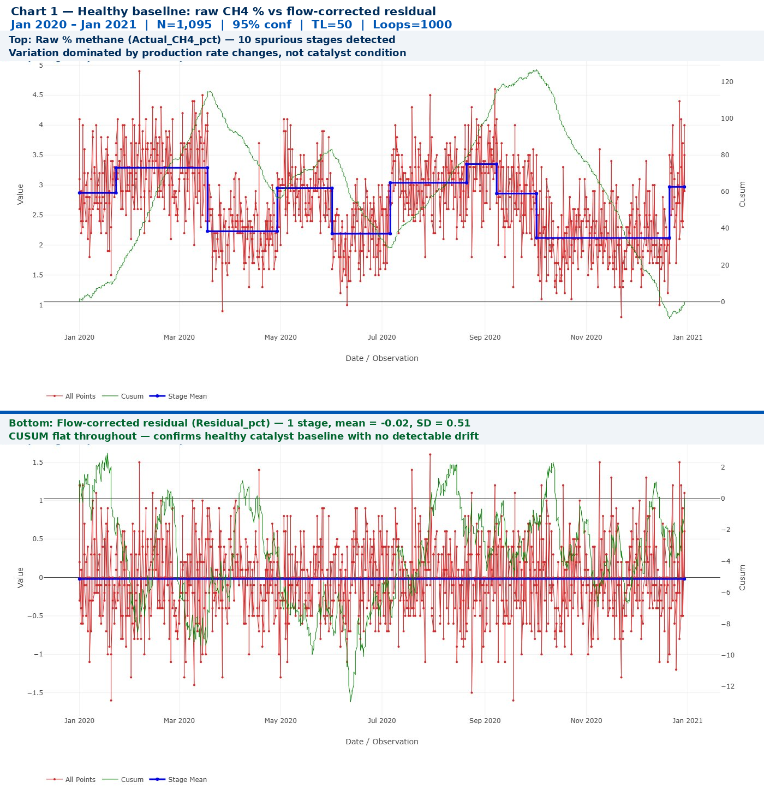
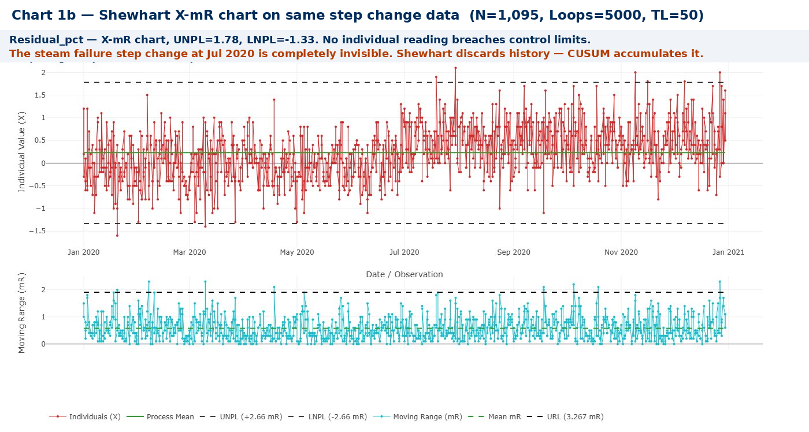
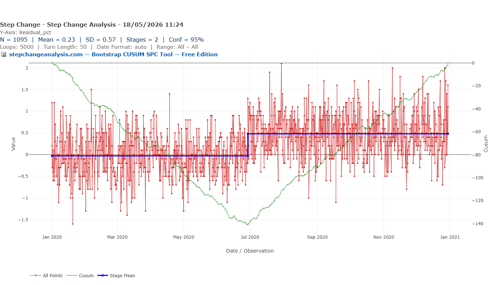
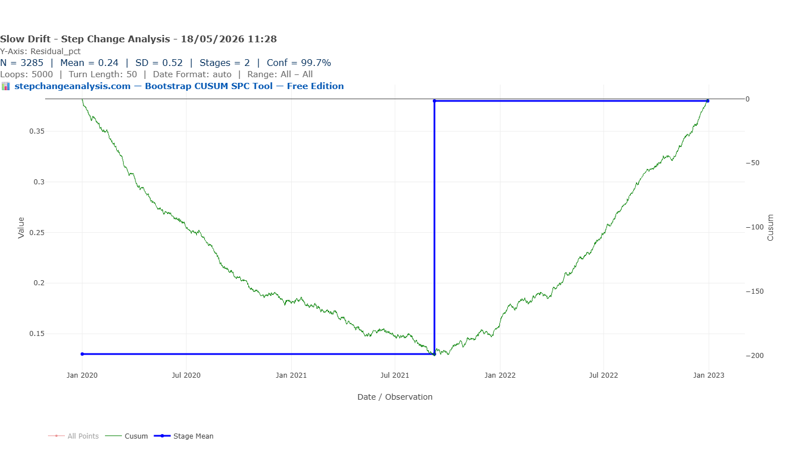
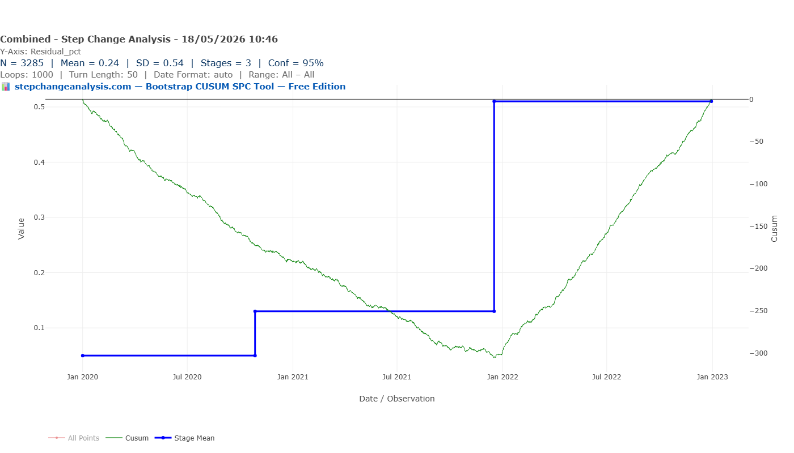
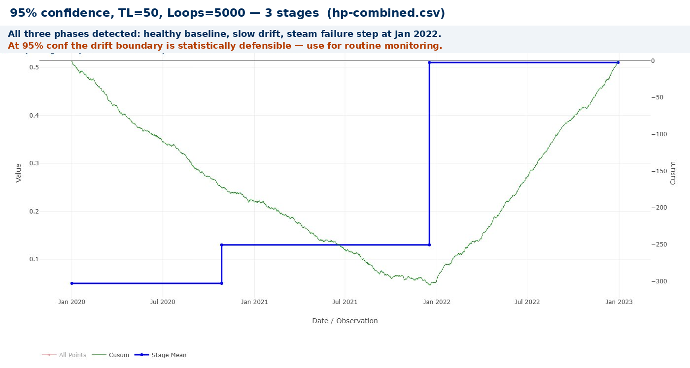
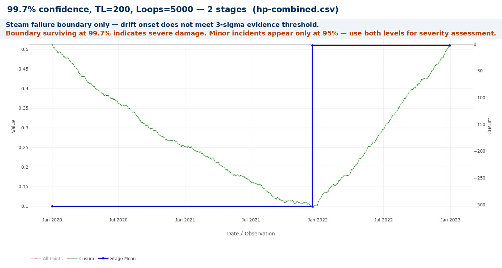

The Hydrogen Plant Problem
Two identical plants. A 17% efficiency gap. Months of investigation. And the monitoring system — built on residual CUSUM, one reading per shift, pen and paper — that finally solved it and prevented it from happening again.
Same Data, Three Charts, Three Very Different Stories explains what the green CUSUM line means and why it detects structural change that other charts miss — including a step-by-step guide to reading the chart. Takes 5 minutes and makes every chart in this article easier to read.
Read above first 📚 Glossary — CUSUM, Deming, Meadows, Joiner, PDSA and more☰ Table of Contents — click to expand or collapse
- The problem nobody could explain
- The clue in the last paragraph
- The monitoring challenge: why raw methane % is not enough
- The residual CUSUM: the right tool for the job
- Scenario 1: Sudden catalyst damage — the steam failure event
- Scenario 2: Slow catalyst degradation — sintering and coking over 3 years
- Scenario 3: The real scenario — slow degradation followed by a damage event
- The practical monitoring system: pen, paper, and one reading per shift
- Broader applications: anywhere a consumable degrades against a varying load
- Establishing the baseline: why the first two years matter
- Setting the Turn Length: damping the analysis against noisy data
- Setting the confidence level: how certain do you need to be?
- A note on the data in this article
- Download the data files
- Try it on your own process data
The problem nobody could explain
In the mid-1970s, I was appointed plant manager of two hydrogen production units at a large chemical works. The units were nominally identical — same design, same process, same catalyst, same feedstock. Both ran on Naphtha, a volatile hydrocarbon fraction derived from crude oil, using a steam reforming process: high-temperature steam passed over a nickel catalyst to extract hydrogen from the hydrocarbon feed.
Within weeks of arriving, I was confronted with an uncomfortable fact. The naphtha consumption per tonne of hydrogen produced — the key efficiency metric — was 17% higher on Unit 2 than Unit 1. That is not a rounding error. It is a significant and costly difference on a continuous process running around the clock.
The works manager, a very senior figure, was knocking on my office door every few days. What was I doing about it? I had no answer. The plants appeared to be running normally. Neither I, nor the shift supervisors, nor the catalyst company consultant, nor the plant design engineers could explain the discrepancy. The consultant offered that some variation between units could be expected — not exactly the actionable insight I needed.
“The works manager was knocking on my office door every few days. What was I doing about it? I had no answer. The plants appeared to be running normally.”
I was given a technical specialist who had once worked on the plant. He had no bright ideas either.
The clue in the last paragraph
The breakthrough came early one morning before the shift started, when I was reading a technical reference book on steam reforming catalysts. In the last small paragraph of a chapter on catalyst performance, almost as an afterthought, the author noted: catalyst activity can be permanently damaged if the steam-to-naphtha ratio falls below a critical threshold — for example, during a power or steam supply failure.
There had been several power and steam failures over the preceding years. Was it possible that Unit 2’s catalyst had been damaged in one of those events and had never recovered?
As the catalyst degrades, less hydrogen is produced from each unit of naphtha. To maintain hydrogen output, more naphtha must be burned as fuel in the reforming furnace. The 17% naphtha overconsumption was the financial signature of a degraded catalyst. But without a monitoring system sensitive enough to detect it, the damage had accumulated invisibly over years.
We planned a full catalyst replacement — a one-week shutdown, expensive in both time and materials. We proceeded. When Unit 2 restarted with fresh catalyst, its naphtha consumption immediately fell back to the same level as Unit 1. The hypothesis was confirmed.
The monitoring challenge: why raw methane % is not enough
The key real-time process indicator was the percentage methane in the reformer outlet gas. An inline analyser measured this continuously. As catalyst activity declines — whether from sudden damage or slow sintering and coking — incomplete reforming occurs and more methane passes through unreacted. Higher outlet methane means lower catalyst efficiency.
But there is a fundamental complication. The expected methane percentage is not constant — it varies with production rate. The plant operated between 30% flow (hot standby) and 100% flow (full production), with the expected outlet methane running from approximately 2.0% at minimum flow to 3.5% at maximum. The relationship is approximately linear across the operating range.
A rising methane reading might simply reflect a higher production rate — not catalyst deterioration. Monitoring the raw methane percentage without accounting for production rate generates constant false signals and misses genuine problems.
But the deeper problem is even more fundamental. Consider what a 17% naphtha overconsumption actually looks like as a change in the methane reading:
| Efficiency loss | Naphtha overconsumption | Change in residual % methane | Detectable on shift sheet? |
|---|---|---|---|
| Action threshold | 5% | +0.14% | No — noise SD is ±0.5% |
| Serious concern | 10% | +0.29% | No — still below noise floor |
| Crisis level (Unit 2) | 17% | +0.49% | Barely — only just above noise |
The signal-to-noise ratio at the action threshold is just 0.28 — the signal is less than one-third of the background noise on any individual reading. Traditionally, a Shewhart control chart would be the first tool reached for — plotting individual readings against upper and lower control limits. Chart 1b shows exactly what a Shewhart X-mR chart produces on this data: nothing. Not a single signal across a full year that contains a genuine, financially significant step change. A Shewhart chart evaluates each observation independently and discards all previous history. CUSUM accumulates evidence; Shewhart charts discard it. For detecting slow degradation buried in process noise, CUSUM is categorically the right tool.

The residual CUSUM: the right tool for the job
Once the residual is defined, the monitoring question becomes: has the mean of this residual shifted from zero? This is precisely the question that a CUSUM chart is designed to answer.
📋 The residual CUSUM method
Step 1 — Define the reference line from commissioning data or a confirmed period of healthy operation:
Expected % CH₄ = 2.0 + (Flowrate% − 30) × (1.5 / 70)Step 2 — Calculate the residual for each shift reading:
Residual = Actual % CH₄ − Expected % CH₄Step 3 — Apply CUSUM to the residual series. The CUSUM accumulates deviations from zero and signals when the cumulative sum exceeds a decision threshold.
Step 4 — The practical monitoring system. Weekly averages of the residual (21 readings per week, 3 per shift) were plotted as a bar chart on the control room wall — colour-coded green, amber, or red against action levels. A running CUSUM of the weekly residuals was maintained on a separate sheet. No specialist software required — the CUSUM can be updated by hand in seconds at the end of each week.
This approach is what the statistical literature now calls a residual-based CUSUM. The principle — monitor the deviation from an expected value rather than the raw measurement — makes the chart sensitive to genuine process change while remaining immune to false signals from production rate variation. The technique was well established in the industrial quality control literature by the 1970s, following Page (1954).
📈 Two different things on the same chart
The Bootstrap CUSUM display contains two visually distinct elements that do very different jobs, and it is worth being clear about what each one is.
The green CUSUM line is derived entirely from the data — it is the running cumulative sum of deviations from the process mean, calculated observation by observation. It contains no parameters, no statistical assumptions, and no choices made by the analyst. If you change the confidence level or the Turn Length, the green line does not move. It is a pure transformation of the raw data, as objective as the data itself. Its slope tells you the rate of change; a V-shape tells you a step occurred; a sustained upward gradient tells you of a drift. This is the line that a 1970s plant supervisor plotted by hand every week.
The blue stage mean lines are the output of the Bootstrap algorithm. They represent statistically tested boundaries: the algorithm asks, at the confidence level you have chosen, whether the data between two candidate change points is genuinely different from what came before. Those boundaries do depend on your settings. Increase the confidence level and you demand stronger evidence — fewer, better-supported stages. Lower the Turn Length and you permit shorter stages — more of them, some potentially spurious. The blue lines are not in the data; they are a judgement, made with your chosen statistical burden of proof, about where genuine structural changes lie.
Reading the chart correctly means reading both. The green CUSUM line shows you what happened. The blue stage boundaries show you what can be defended statistically at your chosen confidence level.
The steep CUSUM gradient after Day 180 is the fingerprint of a sudden step change. But before looking at what the CUSUM finds, it is worth seeing what a conventional Shewhart X-mR chart shows on exactly the same data:

Now the same data through the CUSUM:
Scenario 1: Sudden catalyst damage — the steam failure event
The first scenario to monitor for is sudden catalyst damage from a power or steam failure that briefly drops the steam-to-naphtha ratio below its critical threshold. The damage occurs in hours. The efficiency loss is immediate and permanent until the catalyst is replaced.

The steep CUSUM gradient after Day 180 is the fingerprint of a sudden step change. The process moved to a new, permanently higher residual level essentially overnight, and the CUSUM accumulates that evidence rapidly. Without the CUSUM, a shift supervisor looking at the control sheet would see only the usual scatter — and likely not react until the efficiency penalty had been running for months.
The confidence level at which the boundary survives is itself diagnostic of damage severity. The steam failure in this scenario is detected at 99.7% confidence — only 3 chances in 1000 of being a false alarm — indicating severe, unambiguous catalyst damage. A minor steam pressure dip causing only partial damage would produce a smaller residual step, detectable at 95% confidence but not at 99.7%. When investigating a suspected steam failure event, run the analysis at both confidence levels: if the boundary survives at 99.7%, the damage was severe; if it appears only at 95%, the incident was marginal and catalyst condition warrants close monitoring rather than immediate replacement.
Scenario 2: Slow catalyst degradation — sintering and coking over 3 years
The second scenario is more insidious: gradual catalyst deterioration over months and years. Nickel catalysts degrade through sintering — the agglomeration of nickel particles at high temperature, reducing active surface area — and through coking, where carbon deposits block the active sites. Both processes are continuous and thermally driven. Neither produces a dramatic step change.
The drift rate in this scenario is approximately 0.00045% per reading — or 0.163% per year. Over three years the residual accumulates to +0.49%, equivalent to the 17% naphtha overconsumption found on Unit 2. This is the scenario most consistent with what actually happened: years of slow degradation, invisible shift by shift, reaching crisis level before anyone noticed.

This chart makes the case for CUSUM monitoring more powerfully than any other. The slow drift is genuinely undetectable by any other method available on a 1970s process plant. There is no single reading, no weekly average, no rolling mean that would trigger concern in Year 1 or most of Year 2. Only the CUSUM — accumulating three years of tiny deviations — reveals the trend in time to act before the crisis level is reached.
For slow drift monitoring, use 95% confidence (2-sigma) as your working threshold. The speed vs certainty trade-off has a critical asymmetry here: if the drift is slow enough or small enough that it never accumulates sufficient CUSUM evidence to cross the 3-sigma (99.7%) threshold, it will simply not be detected at all. At 95% confidence the same drift is detected — possibly with some staircase artefact — but at least flagged for investigation, with a 1-in-20 chance of being wrong. In process monitoring, a missed degradation is almost always more costly than a false alarm that prompts an unnecessary inspection. Act on the 95% signal — investigate and if confirmed, plan the replacement.
Reserve 99.7% for one purpose only: confirming that a drift already detected at 95% has reached a level that justifies committing to an irreversible action such as a planned catalyst replacement. If the boundary survives at 99.7%, the statistical case for replacement is unambiguous.
Scenario 3: The real scenario — slow degradation followed by a damage event
In practice, both fault types can occur together. The catalyst slowly degrades over years, and then a steam or power failure accelerates the damage to a new, worse level. This combined scenario is the most likely explanation for what happened on Unit 2: years of slow sintering followed by a steam failure that pushed the efficiency penalty to the 17% level at which it finally became impossible to ignore.

An analyst reviewing the CUSUM in Chart 4 can read the process history directly: “slow degradation across the first two years — the CUSUM rose gradually; then something acute happened at the start of Year 3 that changed the rate.” With a record of steam and power failures, the Year 3 event could be identified and dated. The slow drift across Years 1–2 would have been the signal to schedule a catalyst inspection during the next planned maintenance window — before the acute event occurred.
The practical monitoring system: pen, paper, and one reading per shift
Having replaced the catalyst and confirmed the hypothesis, the next question was: how do you prevent this happening again? We had no data loggers, no digital process historians, no software. What we had was a control room, a shift supervisor, and a pen.
The monitoring system I implemented was deliberately simple:
- Each shift, the operator recorded the outlet methane % and the current production rate on the standard control sheet — one additional line on a sheet already being completed
- The shift supervisor calculated the flow-corrected residual for each reading
- Weekly averages of the residual were plotted on a bar chart on the control room wall — colour-coded green, amber, or red against the action levels
- A running CUSUM of the weekly residuals was maintained on a separate sheet
Chart 4 shows the key advantage of the combined analysis. With a record of steam and power failures, the Year 3 event could be identified and dated. The slow drift across Years 1–2 would have been the signal to schedule a catalyst inspection during the next planned maintenance window — before the acute event occurred.
💡 The pen-and-paper principle
The most sophisticated statistical method is worthless if it cannot be maintained consistently on a real industrial plant by real shift operators under real operational pressure. The system described here required approximately five minutes of additional work per shift and fifteen minutes per week from the shift supervisor. The method was sound; the implementation was simple. That combination is why it worked — and why it kept working for years after the plant manager who designed it had moved on.
Furnace tube temperature as a corroborating monitor
Further to the methane-based residual CUSUM, we added a second independent signal that provided valuable corroboration. The reforming furnace contains tubes packed with catalyst operating at temperatures of 800–900°C. As catalyst efficiency diminishes, the reaction goes less far to completion at a given temperature and throughput rate — incomplete reforming allows more methane to pass through unreacted. To maintain hydrogen output the furnace temperature rises with the throughput rate. This relationship between catalyst condition and operating temperature is an independent physical signal of the same underlying degradation.
We began taking spot checks of the tube temperature once per shift using an optical pyrometer — a non-contact instrument that reads surface temperature from the thermal radiation emitted by the tube wall. One reading per shift, logged on the same control sheet as the methane reading, added approximately two minutes to the shift supervisor’s routine. The temperature residual was calculated in exactly the same way as the methane residual: actual temperature minus expected temperature at the current production rate, using a reference line established during the healthy catalyst baseline period.
The two residual series — methane and temperature — are not independent. Both are driven by the same underlying variable (catalyst activity), so they tend to move together. But their correlated movement is exactly what makes them valuable as a combined monitoring system:
- A rising methane residual accompanied by a rising temperature residual is strong confirmation of genuine catalyst degradation — two independent physical signals pointing in the same direction.
- A rising methane residual without a corresponding temperature signal warrants investigation of the methane analyser before concluding the catalyst is at fault — instrument drift rather than process degradation.
- A rising temperature residual without a methane signal is the rarer case — possible if the methane analyser has failed low — and should prompt immediate instrument calibration.
📊 Two independent signals, one underlying cause
Running Bootstrap CUSUM on both residual series and comparing the change points provides a powerful cross-check. If the methane residual shows a change point at the same date as the temperature residual, the probability that both are false alarms simultaneously is vanishingly small. Conversely, if only one series signals, the cause is more likely to be in the measurement system than in the catalyst. Two independent Bootstrap CUSUM change points at the same date are categorically stronger evidence than a change point on one measure alone.
Broader applications: anywhere a consumable degrades against a varying load
The residual CUSUM principle described in this article is not specific to hydrogen production. It applies to any process where an output metric depends on both a legitimate operating variable (production rate, load, throughput) and a condition variable (catalyst activity, membrane integrity, surface cleanliness) that you want to monitor independently of the operating variable.
The method is the same in every case: establish the expected output at the current operating point, calculate the residual, and apply CUSUM to the residual series.
Pharmaceutical manufacturing
Pharma is perhaps the most compelling application outside petrochemicals, for two reasons. First, the process monitoring challenge is identical: batch yields, dissolution rates, and active ingredient concentrations all vary with process parameters (temperature, compression force, mixing time) in ways that must be separated from genuine process drift before monitoring is meaningful. Second, the regulatory environment — FDA process validation requirements, ICH Q10 pharmaceutical quality systems, and the expectation of documented statistical process control — makes the case for residual CUSUM not just technically sound but formally required.
Specific applications include: tablet punch wear monitored via hardness or dissolution residual against compression force; fermentation yield per batch monitored against substrate concentration and temperature profile; API synthesis catalyst loading monitored via conversion residual against batch size and reaction temperature.
Gas turbines and power generation
Heat rate — fuel consumption per megawatt-hour — is the primary efficiency metric for gas turbines. It varies strongly with ambient temperature, load factor, and inlet conditions. Regression-adjusted CUSUM monitoring of heat rate residuals has been used by power generators for decades, and is arguably the most mature industrial implementation of exactly the method described in this article. Compressor fouling, combustion degradation, and turbine blade deterioration all produce characteristic CUSUM signatures in the heat rate residual.
Heat exchangers and membrane systems
Fouling in heat exchangers produces a gradual decline in the overall heat transfer coefficient — precisely the slow drift scenario illustrated in Chart 3. The residual is calculated against the clean-service heat transfer coefficient at current flowrates and temperatures. Similarly, membrane fouling in reverse osmosis and ultrafiltration systems is best monitored via the permeate flux residual against feed pressure and temperature.
The unifying principle
Across all these applications, the pattern is the same. A raw measurement that confounds condition with operating point. A reference line that separates them. A residual that carries only the condition signal. And a CUSUM that accumulates that signal across weeks and months until it becomes unmistakable — detecting degradation that no individual reading, no rolling mean, and no Shewhart chart would catch in time.
The signal-to-noise ratio at the economically meaningful action threshold is almost always below 1.0 in these applications. That is not a coincidence. It is the nature of gradual industrial degradation — and it is why CUSUM, and specifically residual CUSUM, is the right tool.
Establishing the baseline: why the first two years matter
A residual CUSUM monitoring system cannot detect drift without a well-established baseline. The first one to two years of operation with a fresh catalyst are not a waiting period — they are an essential calibration phase.
During this period, three things happen simultaneously. The reference line (expected % methane versus flowrate) is confirmed against real operating data. The natural variation of the residual — the ±0.5% shift-to-shift noise from temperature fluctuations, analyser drift, and sampling variation — is characterised. And the CUSUM establishes its flat baseline, giving you a visual anchor against which any future slope will be unmistakable.
A note on the reference line calculation: in this article a straight line relationship between flowrate and expected methane has been used — simpler to calculate and sufficient for the operating range of this plant. In practice the relationship may be non-linear: at higher production rates, residence time in the reformer tubes decreases and the methane-flowrate relationship may follow a curve rather than a straight line. The practical recommendation is to start with a linear fit, examine the residuals at the extremes of the operating range, and if they show a systematic pattern — consistently positive at high rates, consistently negative at low rates — conduct targeted experiments at the rate extremes to characterise the non-linearity before refining the reference line.
In practice, the monitoring timeline for a steam reforming catalyst typically looks like this:
- Years 1–2: Fresh catalyst, residuals tight around zero, CUSUM flat. Baseline establishment.
- Years 3–4: First signs of drift may begin to appear. The CUSUM develops a very gentle downward slope. No action required — but the pattern is worth watching and documenting.
- Years 4–5: Drift becomes statistically detectable at 90% confidence — the early warning threshold. This is the signal to increase monitoring frequency and plan a catalyst inspection at the next scheduled shutdown.
- Year 5 onwards: If no action has been taken, the residual approaches the crisis level. Any steam or power failure at this point risks a large, sudden step on top of the existing drift.
This timeline has a direct implication for new plant managers or process engineers inheriting a running plant: the absence of historical monitoring records is itself diagnostic information. If there are no longitudinal residual records, you cannot know where you are on the degradation curve. The correct response is to establish the monitoring system immediately, accept that the first year of data is establishing a new baseline, and investigate the catalyst history for any recorded steam or power failures.
Setting the Turn Length: damping the analysis against noisy data
The Turn Length (TL) parameter in Bootstrap CUSUM sets the minimum number of observations that a stage must contain before a change point can be declared. Taylor (2000) defines it as the minimum segment length in the backward elimination procedure — the shortest period the algorithm will consider as a potentially genuine stage when testing candidate change points.
The practical purpose of TL is straightforward: when residual data is highly variable, you do not want the algorithm examining every small spike or turning point on the CUSUM caused by that variability. Setting a meaningful TL dampens the analysis — it forces the algorithm to look only for sustained changes that persist over a minimum duration, filtering out the short-term noise-driven fluctuations that would otherwise generate spurious stage boundaries.
The fundamental definition remains: TL = the minimum believable duration of a genuine stage, expressed in observation units. If you are taking three readings per day and you believe no genuine process stage could last less than two weeks, then TL = 3 × 14 = 42. For most catalyst monitoring applications, a value between 40 and 60 is appropriate — roughly two to three weeks of minimum stage duration.
The more informative comparison for this dataset is the confidence level — which controls how much statistical evidence is required before a boundary is declared. The two charts below show the same data at 95% and 99.7% confidence:


| Confidence level | Loops | Stages found | Result |
|---|---|---|---|
| 95% | 5000 | 3 | Drift onset + steam failure both detected — use for routine monitoring |
| 99.7% | 5000 | 2 | Steam failure only — use when justifying irreversible action |
A note on Bootstrap loops: with a low signal-to-noise ratio dataset like this one (SNR = 0.28), 1000 loops is insufficient — the marginal drift stage boundary may or may not be detected on any given run, producing inconsistent results. Setting Loops to 5000 stabilises the result by giving the algorithm enough resamples to confidently place the boundary. For slow degradation monitoring where the signal is weak, always use at least 5000 loops.
The general rule of thumb: set TL to the minimum number of observations you would need to be convinced a genuine change had occurred. For a sudden steam failure, that might be a week of readings (TL≈21). For slow sintering drift, it is more like three to four weeks (TL≈63). When monitoring for both simultaneously, use the longer TL — the sudden step will still be detected even with a conservative Turn Length.
A practical approach when first establishing monitoring on a new plant:
- Run the analysis at TL=10 first — if you see dozens of stages, TL is too low
- Increase TL in steps of 10 until the number of stages stabilises
- The TL at which the stage count stops decreasing rapidly is your working value
- Document this TL in the plant monitoring procedure so it is consistent across shift supervisors and plant managers
- Review the TL annually — if plant operating patterns change significantly, the appropriate TL may change too
Setting the confidence level: how certain do you need to be?
The confidence level is the second parameter you choose when running a Bootstrap CUSUM analysis. Where the Turn Length controls the minimum duration of a stage, the confidence level controls the minimum statistical weight of evidence required before a change point is declared.
📈 Two sigma, three sigma — in plain language
The 95% and 99.7% confidence levels correspond to what statisticians call 2-sigma and 3-sigma boundaries respectively. The practical difference is a trade-off between speed of detection and certainty of verdict:
- 95% (2-sigma): The decision threshold is closer to the process mean, so a small persistent change accumulates enough CUSUM evidence to cross it faster. More sensitive — detects smaller shifts earlier. Accepts a 1-in-20 risk of a false alarm from normal process variation.
- 99.7% (3-sigma): The threshold is further away, so only a larger or more sustained change will cross it. Less sensitive to minor fluctuations — fewer false alarms, but slower to signal a small shift. A 3-in-1000 risk of a false alarm.
CUSUM charts are specifically designed to detect small shifts — changes of less than 1.5 sigma that a standard Shewhart chart would routinely miss. The confidence level controls how small a shift the Bootstrap algorithm will commit to declaring.
| Confidence level | What it means | Use when… | Risk profile |
|---|---|---|---|
| 90% | A 1-in-10 chance the detected change is noise | Exploratory analysis; early warning monitoring where missing a real change is more costly than a false alarm | More stages detected; some may be marginal |
| 95% | A 1-in-20 chance the detected change is noise | Standard industrial monitoring; the conventional threshold for process investigations | Balanced — the working default for most applications |
| 99.7% | A 1-in-370 chance the detected change is noise (3-sigma equivalent) | Regulatory or financial reporting; situations where a false positive would trigger costly or irreversible action | Fewer stages; only the most unambiguous changes declared |
For the hydrogen plant application, the choice of confidence level reflects the cost asymmetry of the decision. A false positive — declaring a catalyst change when none occurred — wastes investigation time but costs little else. A false negative — missing a genuine degradation event — allows the efficiency penalty to accumulate undetected, potentially for months. This asymmetry favours a lower confidence level during routine monitoring: 90% is defensible and appropriate for early warning.
There is a further practical implication that is easy to overlook. The confidence level at which a detected boundary survives is not just a statistical threshold — it is a proxy for the magnitude of the underlying change. A step change that survives at 99.7% confidence was large relative to the process noise; one that appears only at 95% was smaller and more marginal. Applied to industrial fault detection, this means the confidence level carries diagnostic information about severity. Running the analysis at both confidence levels after a known plant event is therefore not just a statistical exercise; it is a quantitative assessment of how serious the damage was.
⚠️ The confidence level does not change the CUSUM line
It is worth repeating a point from earlier: changing the confidence level moves the blue stage boundaries, but it does not change the green CUSUM line. The shape of the cumulative sum is determined by the data alone. What the confidence level controls is how firmly the algorithm is prepared to declare that a visible kink in the CUSUM represents a genuine structural change rather than random variation. If you are uncertain about the right confidence level for your application, start at 95%, look at the stage structure, then run at 90% and 99.7% to see what changes. The green line will be identical in all three runs — only the boundaries will differ.
A note on the data in this article
All charts and CSV files in this article use data generated computationally to illustrate the monitoring principles as realistically as possible. The production parameters are based on realistic values for a naphtha steam reforming unit of this type: flowrate range 30–100%, expected outlet methane 2.0–3.5% (linear with flowrate), shift-to-shift noise SD ±0.5%, and slow degradation reaching 0.49% residual over three years.
The flowrate profile reflects realistic plant operations: flowrates held steady for days to weeks at a time, standby periods of two to four weeks at 30–45% flow, gradual ramps over a few hours between operating levels, and occasional visits to low-demand operation of one to two weeks.
The data is not real plant data. The industrial events described — the 17% efficiency gap, the catalyst replacement, the pen-and-paper monitoring system — are based on real experience from the 1970s. The numerical data used to illustrate those events has been generated to match the statistical properties of what a real monitoring system would have recorded.
Download the data files
The CSV files below can be uploaded directly to StepChangeAnalysis.com to reproduce the analyses shown in this article. Use Y = Residual_pct as the monitored variable, with the settings described for each scenario.
| File | Scenario | Rows | Download |
|---|---|---|---|
hp-baseline.csv |
Healthy catalyst baseline — Jan 2020 to Jan 2021 | 1,095 | ⇣ Download |
hp-stepchange.csv |
Sudden steam failure at Day 180 | 1,095 | ⇣ Download |
hp-slowdrift.csv |
Slow catalyst degradation over 3 years | 3,285 | ⇣ Download |
hp-combined.csv |
Slow drift followed by steam failure | 3,285 | ⇣ Download |
Try it on your own process data
If you have historical process data — even monthly averages from a pen-and-paper log — you can apply Bootstrap CUSUM step-change analysis using StepChangeAnalysis.com. For a residual-based analysis, calculate the residual in a spreadsheet first (actual minus expected at current operating conditions), save as CSV, and upload the residual column as your Y-axis variable.
📊 Note: All charts use fictitious data generated to illustrate the monitoring principles. The production parameters are realistic for a steam reforming unit of this type. The industrial events described — the 17% efficiency gap, the catalyst replacement, the pen-and-paper monitoring system — are based on real experience from the 1970s.
Analyse your own process data
Upload any time-series CSV — process readings, efficiency metrics, incident counts — and detect step changes and slow drifts with Bootstrap CUSUM. Free, browser-based, no data leaves your computer.
📊 Open the Free ToolThis analysis sits within a broader framework for understanding why improvement programmes succeed or fail. Start with Why Nothing Changes for the full picture, or go to Start Here for a guided introduction to the method.